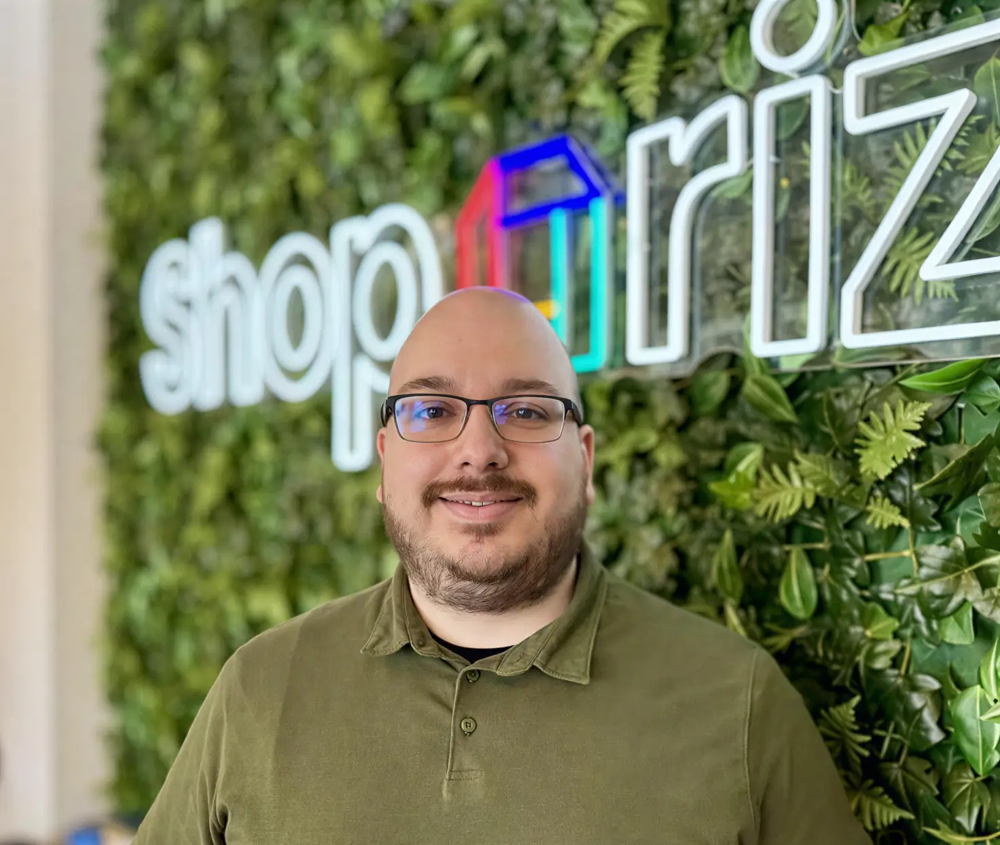

Vince van Daal
Head of Engineering / Cloud Infrastructure Specialist
Passionate about security, automation, scalable infrastructure, and leadership
Worked at/for:
Beyond Work
My IT History
My journey in IT kicked off when I was just 14, tinkering away and building text-based games online using PHP. From there, I was always poking around with web servers and picking up all sorts about Linux—couldn't get enough of it, really.
A secondment at Nike gave me my first taste of professional IT work and leadership—I ended up as team captain for the first-line help desk. It was great fun and taught me loads about coaching and keeping operations running smoothly.
After that, I joined Mijndomein doing technical support for web hosting, which was a brilliant way to deepen my technical knowledge. Before long, I'd moved up to a Junior Linux System Administrator role, getting hands-on with server management and automation.
Then came the big leap—I packed my bags and moved to Ireland to work for Amazon, where I was hired as a DNS Support Engineer (which is basically a fancy way of saying System Administrator). I quickly worked my way up through Systems Development Engineer to Technical Program Manager, where I discovered I really enjoy running projects and being that go-between for technical and non-technical folks.
Around that time, the Cloud was becoming a massive deal, so I got stuck into AWS and all things cloud infrastructure. After my time in Ireland, I headed back to the Netherlands and dove headfirst into DevOps and Site Reliability Engineering. I worked with some brilliant companies—ASML, NS (Nederlandse Spoorwegen), DHL, and others—building cloud platforms and helping teams improve their infrastructure.
I eventually worked my way up to Senior Cloud Engineer roles, focusing on cloud infrastructure, Kubernetes, and mentoring teams. I even started my own consultancy company (10nxt) for a couple of years, but soon realised it wasn't quite my cup of tea—I much prefer being part of a company and working with a team day in, day out.
That realisation led me to my current gig as Head of Engineering at Shoparize, where I get to do what I love: lead brilliant people, build robust platforms, and keep learning every single day.